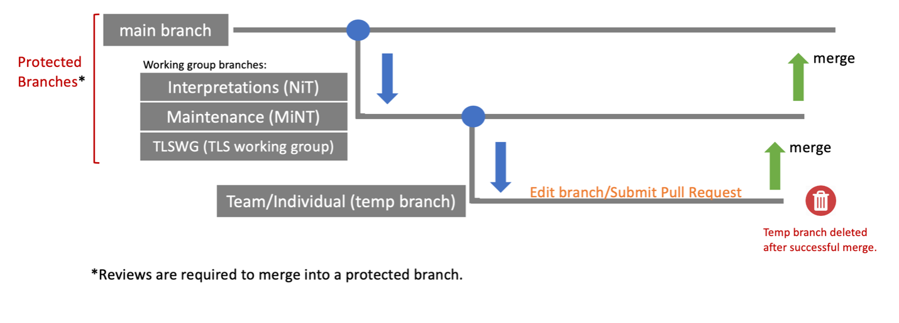

GitHub Overview
Introduction
The ND-iTC has migrated away from MS Word to AsciiDoc in GitHub for version control and collaboration. The ND-iTC GitHub Organization can be found at ND-iTC GitHub Organization.
Issues
Issue templates have been created to gather required information from contributors who have comments on ND-iTC documents, such as typos, corrections, or enhancements. Comments may be provided through the GitHub issue tracker: ND-iTC issue templates.
For an explanation of how to use the GitHub issue tracker, refer to GitHub Docs: Creating an issue.
Teams
GitHub Teams have been set up by working group, with permissions that control which branches can be edited: ND-iTC Teams.
Repositories
-
Documents
Current NDcPP and ND SD docs converted to AsciiDoc -
NIT (Private)
Private repository for NIT workspace -
PP-Module-Core-protections
Repository for the Core protections working group, with docs converted to AsciiDoc -
PP-Module-FW
Repository for the Protection Profile Module for Stateful Traffic Filter Firewalls documents -
ND-iTC.github.io
Repository for a GitHub-hosted website that allows the ND-iTC to provide additional information and training. This page can be accessed at ND-iTC website.
Branches
Branches allow working groups to safely edit a document in a contained area of the repository. The diagram below shows the ND-iTC branch structure.

GitHub Guidance for Subgroups
Quick Start
If you are already familiar with GitHub Desktop, use this abbreviated workflow:
-
Clone the repository.
-
Fetch origin and switch to your working group branch.
-
Create a temporary branch named WG-summary-MMDDYY-initials (no spaces).
-
Edit and preview the AsciiDoc document in VS Code.
-
Commit and publish the branch.
-
Open a PR from your temporary branch to the correct working group branch.
GitHub Setup
There are numerous ways to interact with GitHub repositories (GitHub Desktop, an editor such as VS Code, or the browser). The original demo used GitHub Desktop and Atom with an AsciiDoc plugin. Atom is now EOL and no longer recommended. VS Code is now the preferred editor in this guidance.
Initial setup steps:
-
Create a GitHub account - GitHub sign-up
-
Download GitHub Desktop - GitHub Desktop
-
Set up an editor:
VS Code - VS Code -
Install an extension to view AsciiDoc in the editor:
VS Code AsciiDoc Extension
Asciidoctor VS Code Extension -
You must be added to a GitHub team to have editing privileges. Contact an administrator to be added.
Steps to Edit Documents
-
Clone the repository:
-
Open GitHub Desktop
-
Select 'Clone a repository from the internet'
-
Enter the URL for ND-iTC/Documents repository, https://github.com/ND-iTC/Documents.git
-
-
Fetch current files:
-
In GitHub Desktop on the top bar, select the 'Documents' repository and the appropriate working group branch (for example, Maintenance or TLSWG)
-
Click on 'Fetch origin'
-
-
Create a new branch:
-
Select 'Current Branch' drop down to create a new temporary branch
-
In the 'Filter' window, name your branch with 'workinggroup-summary-date-initials' (for example, TLSWG-Update_DTLSS-032926-KK; avoid spaces)
-
Under 'create branch based on', select the correct working group branch
*Note: It is important that you select the appropriate branch to base your temporary branch on. -
Click 'Create New Branch' button
-
-
Edit the documents in your editor:
-
Open the repository in your external editor by clicking the 'Open in VS Code' button
*Note: Confirm you are in the temporary branch you created in the status bar at the bottom of your editor. -
Make the edits in your editor and use AsciiDoc preview to view changes
*Note: Preview in VS Code with ctrl+shift+v or cmd+shift+v. -
Save edits (ctrl+s or cmd+s)
-
-
Commit and publish changes:
-
In GitHub Desktop on the left hand side, commit your changes with a title that briefly summarizes the changes and a detailed summary of your changes in the description
-
Click the 'Commit to…' button
-
Click the 'Publish branch' button
-
-
Open a pull request (PR):
-
In GitHub Desktop, click on the 'Open Pull Request' button
-
This will take you to GitHub in your browser where you will need to confirm the base branch and compare branch
*Note: It is important that you are requesting to merge your temporary branch to the appropriate working group branch in your PR. -
The commit title and description from the previous step should auto-populate in the PR
-
Click on the 'Create Pull Request' button to finish opening your PR
-
GitHub Review Process
All PRs require reviews with approval before they can be merged into a working group branch. The following GitHub article describes the review process: Reviewing proposed changes in a pull request
Troubleshooting
-
Wrong branch selected for a PR: Confirm the PR base is your working group branch and the compare branch is your temporary branch.
-
Cannot push or open a PR: Verify that you were added to the correct ND-iTC GitHub team.
-
Merge blocked: Check required reviewers and branch protection status on the PR page.
-
Image or preview issues in VS Code: Confirm file paths are relative and that
:imagesdir: imagesis set correctly for the document.
Additional Resources
-
AsciiDoc Syntax Quick Reference
AsciiDoc Syntax Quick Reference -
GitHub Desktop Documentation
GitHub Desktop Getting Started -
VS Code setup overview
VS Code Setup Overview